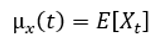
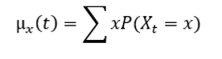
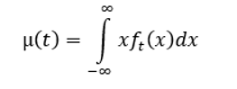
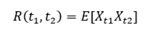
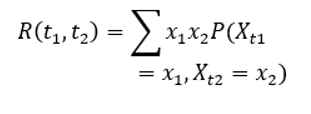
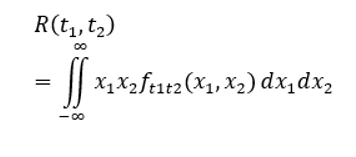

- Procesos
Estocásticos ↓
- Definición
- Ejemplo
- Funciones de
momento ↓
- Definición
- Ejemplos
- Distribución de
Poisson ↓
- Definición
- Ejemplos
- Martingala ↓
- Definición
¿Qué son los procesos estocásticos?
La teoría de los procesos estocásticos se centra en el estudio y modelización de sistemas que evolucionan a lo largo del tiempo, o del espacio, de acuerdo a unas leyes nodeterminísticas, esto es, de carácter aleatorio.
La forma habitual de describir la evolución del sistema es mediante sucesiones o colec-ciones de variables aleatorias. De esta manera, se puede estudiar cómo evoluciona unav.a.a lo largo del tiempo. Por ejemplo, el número de personas que espera ante una ventanilla de un banco en un instantetde tiempo; el precio de las acciones de una empresa a lolargo de un año; el número de parados en el sector de Hostelería a lo largo de un año. La primera idea básica es identificar un proceso estocástico con una sucesión dev.a.{Xn,n∈N}donde el subíndice indica el instante de tiempo (o espacio) correspondiente.
Esta idea inicial se puede generalizar fácilmente, permitiendo que los instantes de tiempo en los que se definen las v.a. sean continuos. Así, se podrá hablar de una colección ofamilia dev.a.{Xt,t∈R}, que da una idea más exacta de lo que es un proceso estocástico.
Se tenía que una v.a. X(s)es una función que va desde un espacio muestral Sala recta real, de manera que a cada puntos ∈S del espacio muestral se le puede asociar unnúmero de la recta real. De este modo, la probabilidad de cada suceso deSse puede trasladar a la probabilidad de que un valor de X (v.a.) caiga en un cierto intervalo o conjunto de números reales. Si a todo esto se le añade una dimensión temporal, se obtiene un proceso estocástico.
Procesos Estocasticos
Un proceso estocástico es un concepto matemático que sirve para usar magnitudes aleatorias que varían con el tiempo o para caracterizar una sucesión de variables aleatorias (estocásticas) que evolucionan en función de otra variable, generalmente el tiempo. Cada una de las variables aleatorias del proceso tiene su propia función de distribución de probabilidad y pueden o no estar correlacionadas entre sí.
Ejemplo
Supongamos que se estudia el número de personas que asisten al médico en cierto hospital, en un intervalo de tiempo determinado, digamos una hora, se puede estudiar el comportamiento de llegadas mediante la definición de la variable aleatoria “Número de personas que llegan al consultorio”. Ahora si en vez de una hora, consideramos dos, es claro que el número de llegadas tiende a ser mayor y por resultante, la distribución de probabilidad de esta nueva variable aleatoria será distinta a la anterior.
Esto nos permite decir que, para cada tiempo, se tendrá una nueva variable aleatoria, generalmente distinta, una forma muy natural de controlar nuestro estudio, es definiendo una familia de variables aleatorias, las cuales dependen de una variable que es el tiempo. En situaciones como esta, decimos que estamos trabajando con un proceso estocástico. Para este caso: Definimos el proceso estocástico X(t) como el número de personas que llegan en el intervalo (0, t). El resultado puede variar dependiendo del tiempo, por lo que queda definido como X(t): t ∈ T, donde T representa al tiempo.
Un proceso estocástico es un sistema que nos permite darle seguimiento a un fenómeno aleatorio a través del tiempo. La sucesión {Xt(ω): t ∈ T, ω ∈ Ω} es un proceso estocástico si, para cada t ∈ T, Xt(ω) es una variable aleatoria. Cada valor obtenido mediante la variable aleatoria definida, nos dará información de lo que sucede con el fenómeno aleatorio conforme transcurre el tiempo. A cada valor posible se le llama un estado y a los distintos cambios de un estado a otro. Si T = {1, 2, ...}, el proceso estocástico Xt, t ∈ T es justamente una sucesión de variables aleatorias y, en tal caso, hablamos de un proceso estocástico de tiempo discreto. Cuando T es un conjunto continuo (un intervalo), hablamos de un proceso estocástico de tiempo continuo. Al conjunto T se le llama el conjunto índice o espacio del parámetro a Xt(ω) o X(t) o Xt, como el estado del proceso en el tiempo t, y los cambios en el valor de X(t) reciben el nombre de transiciones entre sus estados. al conjunto de todos los valores posibles que las variables aleatorias X(t) pueden asumir, se les llama espacio de estados.
Ejemplos de casos cotidianos:- X(t) puede ser el número de aprobados en el curso Probabilidad en el tiempo t
- X(t) puede ser igual al número total de clientes que han entrado al supermercado en el tiempo t
- X(t) puede ser el tiempo que debe transcurrir antes de que un jugador pierda todo su capital.
Ejemplos procesos estocásticos
Ejemplos:
Funciones de momento
Definición:
Las funciones de momento son obtenidas a partir de los momentos de las variables involucradas y sirven para conocer su comportamiento. La función media es una de las funciones de momento más importantes y está definida como:
Para su obtención se tiene en cuenta el tipo de variables del proceso Estocástico. Existen dos tipos de casos de funciones de momento El caso discreto que se define como:
El caso continuo que se define como:
La función de autocorrelación(R) es otra función de momento y se define a partir del momento conjunto de dos variables asociadas a dos tiempos cualesquiera (t1,t2):
El caso discreto que se define como:
El caso continuo que se define como:
Ejemplos de Funciones de Momento
Ejemplos:
Distribución de Poisson
Definición:
La distribución de Poisson se utiliza como modelo probabilísticos apropiado para un gran número de fenómenos aleatorios. La distribución de Poisson es importante ya que tiene muchos casos de uso. Ejemplo, la llegada de pasajeros de un aeropuerto o estación de trenes o autobuses. La distribución de Poisson se usa en ocasiones para aproximar la distribución binomial. Se usan con respecto a las siguientes condiciones:
n >= 100
np <= 10
Una variable aleatoria X tiene distribución de Poisson de parámetro λ > 0 si toma valores en el conjunto {0, 1, 2, . . . }, con probabilidad dada por:

Ejemplos de Distribución de Poisson
Ejemplos:
Martingala
Es un tipo de procesos estocásticos, su nombre proviene de la estrategia de la martingala, una forma de apostar del siglo XVIII. Consiste en volver a apostar por el total perdido al momento de incurrir en una pérdida en un juego de azar. En la nueva apuesta, ya que es posible que el jugador pueda recobrar todas sus pérdidas Estadísticamente el capital medio del jugador se mantiene constante.
El problema reside en que, al cabo de unos pocos ciclos de apuestas, el jugador se ve arruinado al ser incapaz de apostar de nuevo por el total de sus pérdidas. Debido a la estrategia de la martingala es una de las razones por las que los casinos establecen límites máximos al apostar.
Sea un espacio de probabilidad definido por ( Ω , F , P ) donde Ω es el espacio de muestra (esto es, el conjunto de todos los posibles resultados de un experimento aleatorio); F es la σ-álgebra asociada a Ω , y P es la medida de probabilidad. Sea F una filtración de σ F 1 ⊂ F 2 ⊂ … ⊂ F T ⊆ F. Sea { X ( t ) } = X 1 , X 2 , … , X n> una sucesión de variables aleatorias que forman un proceso estocástico. Entonces, el proceso estocástico { X ( t ) , t ≥ 0 } adaptado a la filtración F recibe el nombre de martingala si E ( X ( t ) | F s ) = X ( s ) donde E es la esperanza matemática, y donde F es cualquier sub-σ-álgebra de la filtración.
Ejemplos (Adaptados de “Cimat, Mexico, (2010), Esperanza condicional y Martingalas, MaterialDidactico – pag. 79”). 1.Sea {Yn, n≥1} una sucesión de v.a.i. con media 0 y sea Xn= ∑nk = 1 Y k,n≥1 con Y0=X0=0. Sea Fn = σ(Y0, Y1, . . . , Yn) = σ(X0, X1, . . . , Xn), n≥0. Entonces {(Xn,Fn), n≥1} es una martingala y {(Yn,Fn), n≥1} es una sucesión de diferencias demartingala: E(Xn+1|Fn) = E(Xn+Yn+1|Fn) =Xn+ E(Yn+1|Fn) = Xn. 2.Sean X∈L1 y {Fn, n≥0} una filtración. Paran ≥0 definimos: Xn= E(X|Fn) Entonces {(Xn,Fn), n≥1} es una martingala: E(Xn+1|Fn) = E(E(X|Fn+1)|Fn) = E(X|Fn) =Xn.